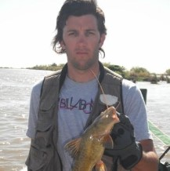
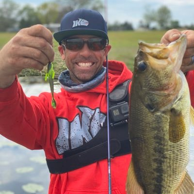
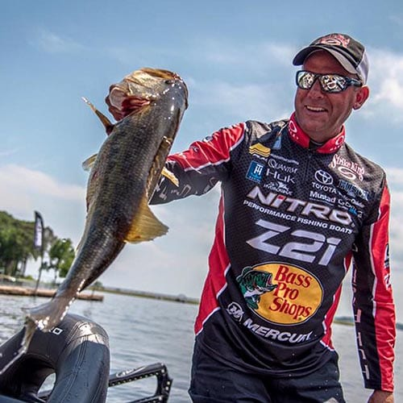

Fernando Soria.
Abu Garcia Pro.
3 Veces Campeón Bass Pro Tournament.
Abu Garcia, Rapala.
 Carnada y Bait Cast.
Carnada y Bait Cast.24 años de experiencia.
Sauce Viejo - Esquina.

Mike Iaconelli.
- Bait Cast y Boya.

Kevin Van Dame.
- Bait Cast